图上从左到右是 6 → 1 弦。○ 空弦，× 不弹；1–4 分别是食指到小指，横线表示横按。

VOLTAGE GUITAR LAB ／ STANDARD TUNING
互动指板
换一个调，找一个把位。点下去，听听它。
01 / FRETBOARD
指板实验台
根音 组成音 把位外
点击任意弦与品试听
KEY / HARMONY
调内和弦
点开指法，也可以直接加到练习。
02 / VOICINGS
和弦图鉴
同一个和弦，换个位置弹。
03 / KEEP TIME
节拍练习
排好和弦，跟着节拍灯循环弹。
我的和弦进行
每张卡片占一小节。在第一拍换和弦，或把重复的和弦加两次。
排序用 ← →，删除用 ×。从图鉴加入时也会保留所选把位。
BPM
准备就绪